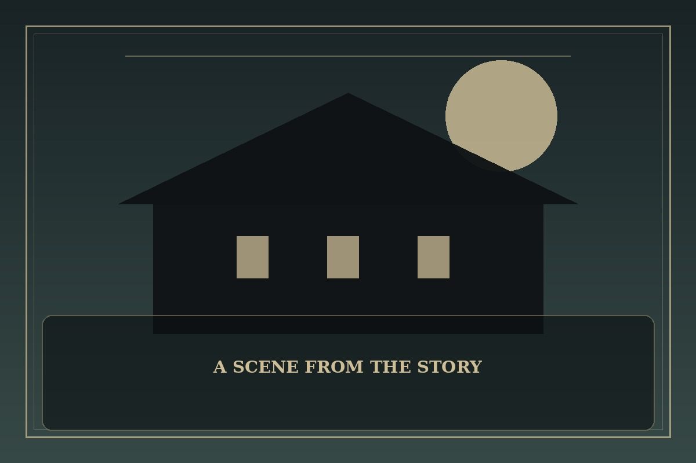

Bastard
Synopsis
A withdrawn student hides a terrible family secret while trying to protect someone from a person everyone else trusts. The closer he gets to the truth, the more courage it takes to break the pattern.
Chapter 1: The Door He Never Opened
Everyone at school praised Jun’s father for his generosity. He donated books, remembered birthdays, and spoke softly enough that adults leaned closer to listen. At home, Jun learned to recognize the silence that came before a threat.
When a new classmate began receiving unwanted attention, Jun saw the familiar signs and felt the old instinct to disappear. He collected small pieces of evidence, afraid that one mistake would turn every accusation back toward him. Each day he delayed, the classmate became more isolated.
At last, Jun gave the evidence to a teacher and stayed in the room while the report was made. His hands shook, but he did not withdraw his words. The truth would be difficult to prove and harder to live with, yet the locked door in his mind had finally opened toward help.

This fan-made sample is an original piece created for a student website project; it is not an official chapter of Bastard.